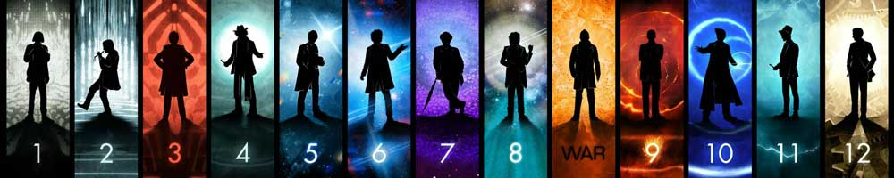

|  |
| Home | The Doctors | The Companions | The Villains | Show History |
Paul McGannMcGann was born in Liverpool, Lancashire, in 1959 into a Roman Catholic family. His mother, Claire, was a teacher, and his father was a metallurgist. His parents encouraged him and his siblings to develop their talents from an early age. McGann's talents were further developed when he attended Cardinal Allen Grammar School in West Derby, Liverpool. Acting on the advice of one of his teachers, McGann successfully auditioned for a place on the acting course at the Royal Academy of Dramatic Art. McGann's brother Joseph was born in 1958 and he has three younger siblings: Mark (born in 1961), Stephen (born in 1963) and Clare McGann (born in 1965). All three of his brothers are also actors and the four of them starred together (as four brothers) in the 1995 TV serial The Hanging Gale about the Irish Famine. The same year he played the role as Grigori Potemkin in TV film Catherine the Great, with Mark and Stephen too. McGann's breakthrough role was Give us a Break, devised by Geoff McQueen who also created the long running ITV series, The Bill. McGann played a good snooker player who got into scrapes with Robert Lindsay, who played his wideboy manager. The series was a comedy drama in the vein of the popular ITV series of the time, Minder. The series only lasted for one season and it was concluded by a one-off special. McGann's first major dramatic role was the infamous British deserter and criminal Percy Toplis in the 1986 BBC serial The Monocled Mutineer. The film was based on the 1978 book of the same name, written by William Alison and John Fairley. Although McGann received praise for his dramatic performance, the drama was never re-broadcast on the BBC. This is because the BBC came under fire from the Conservative Government due to the sensitivity of the subject matter of the Étaples Mutiny in 1917 at the "Bull Ring", a harsh British Army training ground in Étaples, France. The events that occurred at the Bull Ring remain the subject of debate; the relevant documents will remain sealed until 2017. The critics claimed that the film was inaccurate and displayed a "left-wing bias". Toplis was a mysterious figure and the film, like the source book, depicted him as an active participant in the Étaples Mutiny, before he was tracked down and killed some years after the end of World War I after he went on a violent criminal rampage. As a result, a minor political crisis in Britain was launched which prompted the BBC to remove all planned repeat screenings of the film. Despite the banning controversy, The Monocled Mutineer was released by the BBC on video in the early 1990s, and on DVD in 2007. Following on from that part of Percy Toplis, McGann sought a less controversial and more comedic role for his next project. In 1986, he was cast as the anonymous main character in Bruce Robinson's cult film comedy, Withnail and I. He also starred as Anton Skrebensky inKen Russell's 1989 adaptation of D.H. Lawrence's The Rainbow. McGann's other early film appearances include The Monk, Dealers, Tree of Hands and the epic war film Empire of the Sun. McGann and other young British actors who were becoming established film actors such as Tim Roth, Gary Oldman, Colin Firth and Bruce Payne were dubbed the 'Brit Pack'. Since 1989, McGann has concentrated primarily on television work, including Nice Town and Nature Boy for the BBC, and The One That Got Away and the second series of Hornblower for ITV. However, he has had small roles in a number of high-profile American films likeThe Three Musketeers and Alien 3. His role in Alien 3 was originally larger, but much of it was edited out of the final print. The cut footage can be seen in the extended version of the film. In 1993, he was cast as Richard Sharpe, the lead character in the Sharpe series of made-for-TV films based on Bernard Cornwell's novels, however he injured his knee while playing football just days into filming Sharpe's Rifles in the Ukraine. He was replaced by Sean Beanand the role effectively kick-started Bean's career and is the one that he is most closely identified with. Paul McGann played the eighth incarnation of the Doctor in the Doctor Who 1996 television film. The television film also starred Eric Roberts, Daphne Ashbrook and featured the outgoing Seventh Doctor, Sylvester McCoy. McGann's brother, Mark McGann, also auditioned for the title role. The Doctor Who television film was a joint venture between the BBC, Universal Studios and the Fox Broadcasting Network. McGann had signed a contract to appear as the Eighth Doctor in a new Doctor Who series, if Fox or Universal exercised their option. Thus, the television film was supposed to be a "back door pilot" in that, if it obtained respectable ratings, the new series would continue to be produced. The film was shown on 14 May 1996 in the US and on 27 May 1996 in the UK. Although it earned 9.08 million viewers and was very successful in the UK, ratings were very low in the United States. As a consequence, Fox did not exercise its option to pick up the series and Universal could not find another network interested in airing a new Doctor Who series. Thus no new series was produced until 2005, after all the contractual rights had returned to the BBC. McGann gave permission for his likeness to be used on the covers of the BBC's Eighth Doctor novels and he has reprised the role of the Eighth Doctor in an extensive series of audio plays by Big Finish Productions. A number of these plays have also been broadcast on BBC Radio 7 (later BBC Radio 4 Extra). Rumours abounded that Paul McGann would reprise the role of the Eighth Doctor in a new series of television films, alongside the current television series. McGann has denied these rumours on the grounds of not having been asked back to play the part but if he were to be asked would be interested as long as he "didn't have to wear a wig". After months of speculation, on 14 November 2013 (coincidentally McGann's birthday), as part of the show's 50th Anniversary celebrations, Paul McGann finally reprised his role as the Eighth Doctor, in the mini-episode The Night of the Doctor. In this appearance his incarnation of the Doctor finally regenerates, 17 years after his first television appearance, into a previously unknown Doctor played by John Hurt. In November 2013 McGann briefly appeared in the 50th anniversary comedy homage The Five(ish) Doctors Reboot. In the years following his appearance as the Doctor, Paul McGann continued to diversify his acting portfolio with the television and film roles he accepted. In 1997 he appeared as a concerned father in the film FairyTale: A True Story and later that same year as Rob inDowntime, then in 1998 he appeared as Capt. Greville in The Dance of Shiva. In the 2000s McGann's film appearances began to increase with films like My Kingdom (2001), Listening (2003) and Gypo (2005). Perhaps his most iconic role since Doctor Who came in 2002, when McGann appeared in the film adaptation of the third story from Anne Rice'sThe Vampire Chronicles, Queen of the Damned. McGann played the part of David Talbot, a member of the secret organisation the Talamasca, which researches and investigates the supernatural. Talbot has appeared in many of Rice's novels and has become a central character over the years. The film also starred Stuart Townsend, Marguerite Moreau and r&b singer Aaliyah. McGann has also been in demand for voice-over work in Britain in recent years, particularly on television documentaries and commercials. In 2006, he appeared in the television drama Tripping Over. In 2007, McGann starred alongside Dervla Kirwan, Lorraine Ashbourne and David Bradley in BBC One drama True Dare Kiss, written by Debbie Horsfield. In 2010, McGann played a major role in a feature-length episode of long-running BBC mystery series Jonathan Creek, as well as appearing as a regular in the crime drama Luther. In 2011, McGann played a major role as an Assistant Commissioner with something to hide in the final episode of Waking the Dead. It was also announced that he will be featured in Simon Gray's Butley alongside Dominic West at the Duchess Theatre. McGann is also known for audio book narration having read several Pat Barker and Bernard Cornwell novels. He narrated the abridged audiobook of Jeff Noon's 1993 cyberpunk classic Vurt. McGann continues to play the Eighth Doctor on audio. McGann's first Big Finish audio play appearance was in 2001 in the story Storm Warning. It was through the Big Finish audio plays that McGann's Doctor faced many classic Doctor Who villains like the Daleks (in various different audio plays, the first of which being The Time of the Daleks) and the Cybermen (first encountered by the Eighth Doctor on audio in Sword of Orion). Five Eighth Doctor dramas were broadcast in BBC 7's The 7th Dimension slot between August 2005 and January 2006. They were in release order, starting with Storm Warning, although Minuet in Hell was judged unsuitable for the timeslot, and skipped. Two more Eighth Doctor audios, Shada and The Chimes of Midnight were broadcast in December 2005 and January 2006; all six of these stories were rebroadcast on BBC7 beginning in July 2006. In 2007 and 2008, a series of audio plays starring McGann as the Eighth Doctor and Sheridan Smith as companion Lucie Miller was broadcast on BBC7. His voice also featured in the 1997 video game Ceremony of Innocence together with those of Isabella Rossellini and Ben Kingsley. After hearing him sing in The Monocled Mutineer, composer Bernard J. Taylor invited McGann to create the role of Benedict in the concept studio recording of the Much Ado, a musical based on of Shakespeare's Much Ado About Nothing. McGann portrayed Ambassador Durian in The Minister of Chance, a fantasy audio drama released in six parts from 2011 to 2013. The series is a spin-off of the Doctor Who audio drama Death Comes to Time, but has no official connection to the franchise. In February 2014, a crowdfunded short film based on the first instalment of The Minister of Chance was released to those who had helped fund it. |
Brendan Davey Monica DuCong'e Erik Eyler Kayleen Garcie Katie Hyche Ryan Moeller |
Christine O'Brien Alex Recinos Julia Schwartz Madeleine Schwartz Ann Marie Skjold Ashly Wilkins |
[Reference Links] |